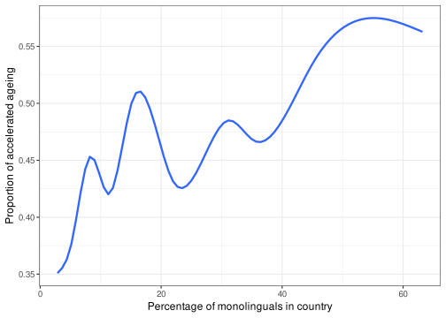
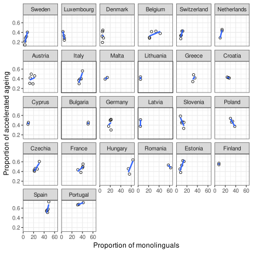
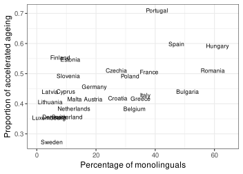
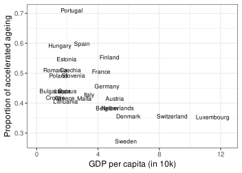
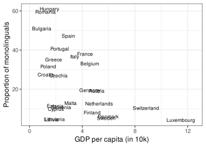
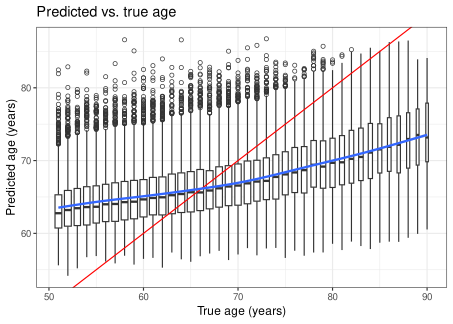
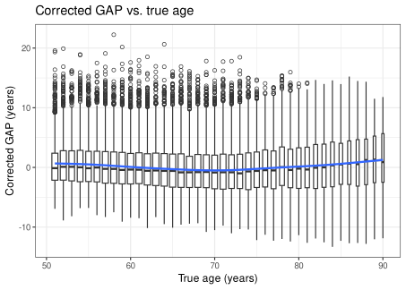
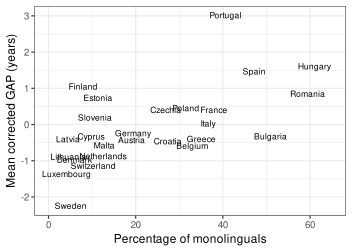
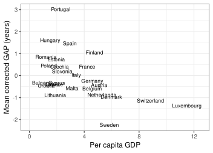

Code
# Load packages and set plotting theme
options(show.signif.stars = FALSE, tidyverse.quiet = TRUE)
library(DT)
library(tidyverse)
theme_set(theme_bw(12))Jan Vanhove
December 15, 2025
Amoruso et al.’s Multilingualism protects against accelerated aging in cross-sectional and longitudinal analyses of 27 European countries struck a chord with multilingualism enthusiasts. But whenever a study claims to have found something that suits us ideologically or economically, it behooves us, as academics, to take a closer look at it.
So I did.
You can find my critical comments below. Most are not very technical in nature, and many can be identified just by reading the paper and looking at the data and code the authors shared—without actually needing to run it. I believe that these comments should lead to a substantial revision of the published article.
Everything below is based on Amoruso et al.’s article, its supplementary materials, and the data and code provided on the project’s GitHub page, which I’ve forked. I didn’t consult the sources that the authors obtained their data from.
The first few critical comments can be raised by just reading the article and comparing the claims made in it to the data and code made available by the authors.
Let’s take a look at how Amoruso et al.’s analytical pipeline is supposed to work.
The dataset scripts/main/data/data.csv contains 86,149 observations of 14 variables: the respondents’ country, age, sex, and scores and indicators of 11 biobehavioural factors:
Education,Barthel,Diabetes,Hypertension,Heart_Disease,Physical_activity,Cognition,Well_being_domain,Sleep_problems,Audition_problems,Vision_problems.The authors derived what they dubbed biobehavioural age gaps (‘BAGs’) from this dataset in the Jupyter notebook scripts/main_BAGs_computation.ipynb. Lots of the code in this notebook isn’t really important, but if you look for the string vars_list, you’ll see that the eleven biobehavioural factors as well as the participants’ sex were used as predictors, for a total of twelve predictors.
But their article (particularly Figure 1b) suggests that fourteen predictors were used to derive the BAGs. The factors unhealthy weight and alcohol consumption are mentioned both in this Figure and in the article’s Methods section, but they simply aren’t in the dataset and apparently weren’t used when deriving the BAGs.
Further, the Jupyter notebook doesn’t actually output the BAGs. Instead, two new datasets are fed to the second round of analyses. The first of these new datasets is scripts/main/data/BAG_OR_cross.csv. It contains 84,127 observations of 21 variables. I’ll discuss these variables later. This dataset was used for the cross-sectional analyses carried out in the Jupyter notebook scripts/main/ORs_cross.ipynb. The second is scripts/main/data/BAG_or_long.csv, which contains 81,329 observations of 22 variables and was used for the longitudinal analyses carried out in the Jupyter notebook scripts/main/ORs_long.ipynb.
The difference in sample sizes is not commented on anywhere. The difference between 86,149 (data.csv) and 84,127 (BAG_OR_cross.csv) is 2,022, which happens to be exactly the size of the Slovak sample. The supplementary Table 6 does not contain any information about Slovakia. But it does contain information about Serbia, which isn’t represented in data.csv. I suspect that the authors blundered when merging the BAGs with the country-level information. Neither the actual BAG computation nor the merging is documented in any of the notebooks, though.
Another 2,798 observations are missing from BAG_OR_long.csv. I didn’t investigate these further; for the time being, I’ll focus on the cross-sectional analyses.
As the authors correctly point out in their discussion, their design and analysis do not allow them to establish any causal links between the degree of multilingualism in a country and the extent to which its inhabitants show signs of accelerated ageing. Unfortunately, they don’t seem to have kept this insight in mind when they came up with the title (“Multilingualism protects…”) and the abstract (“These results underscore the protective role of multilingualism…”).
Further, the authors write
“[R]andomized controlled trials could explicitly manipulate multilingualism and directly assess its effects on aging clocks.”
Could they really, though?
The study’s outcome variable was the presence or absence of “accelerated ageing”. Let’s see how this outcome variable was constructed.
First, the authors gathered data on individual “biobehavioural” factors (see data.csv). These are based on self-reports and are fairly coarse. For example, the variable Hypertension is simply the yes/no response to whether a physician has ever told the respondent that their blood pressure was too high. The list of specific questions can be found in the supplementary materials.
Then, they used the dataset to fit a model with the respondents’ age as the outcome variable and all of these biobehavioural factors as predictors. The model itself is gradient boosting, but that is not especially important conceptually. What is important is that the model is able to pick up on nonlinearities and interactions. The model’s hyperparameters were estimated from the data, and a couple of different cross-validation techniques were used. For our present purposes, I’m going to focus on the leave one country out cross-validation, because it makes the most sense to me. What this means is that 27 models predicting age from biobehavioural factors were fitted, with each leaving out the data from another country.
Next, the models fitted were used to predict the age of the inhabitants of the country that was left out when fitting them. That is, the Belgian respondents’ ages were predicted on the basis of the model fitted to the data from the respondents in the other 26 countries.
Then, the authors computed, for each respondent, \[\texttt{GAP} := \textrm{predicted age} - \textrm{actual age},\] that is, the negative model residuals. As the authors correctly point out, though, the predictive model will tend to underestimate the age of the oldest respondents and overestimate the age of the youngest respondents. To account for this phenomenon, they fitted linear models with \(\texttt{GAP}\) as the outcome and the participants’ actual age as the predictor; let’s call the predicted values of model the predicted \(\texttt{GAP}\) values. They then defined \[\textrm{corrected } \texttt{GAP} := \texttt{GAP} - \textrm{predicted } \texttt{GAP}.\]
Finally, the authors defined the variable “biobehavioural age gap” (\(\texttt{BAG}\)) as \[\texttt{BAG} := \begin{cases}1, &\textrm{if corrected } \texttt{GAP} > 0, \\ 0, & \textrm{otherwise}.\end{cases}\] I’m always somewhat skeptical when the input to one statistical model is the output of another one. The \(\texttt{BAG}\) values that serve as the outcome variable in the models testing for a multilingualism effect are themselves the dichotomised output of another statistical model whose input, in turn, is the input the output of yet another statistical model. At the very least, the literal meaning of these \(\texttt{BAG}\) values is highly convoluted.
Further, I do not see why the corrected \(\texttt{GAP}\)s had to be dichotomised in the first place, thereby losing the distinction between a corrected \(\texttt{GAP}\) of, say, half a year and one of 12 years. The authors write that these dichotomous variables were created because otherwise no odds ratios (and relative risks) could be computed. But this is hardly a satisfactory justification; it’s a bit like scattering dust throughout your living room before vacuum cleaning it as otherwise there would be no dust to get rid of.
Lastly, note that any given respondent’s \(\texttt{BAG}\) value doesn’t just depend on this respondent’s biobehavioural data: both the model to compute their raw \(\texttt{GAP}\) value as well as the one to compute their corrected \(\texttt{GAP}\) value are based on the data from the respondents in all the other countries. In fact, you’d expect roughly half the respondents to have a positive \(\texttt{GAP}\) value.
The authors use country-level data on multilingualism, namely the estimated percentage of monolinguals in the country, the estimated percentage of people in the country who know (exactly) one additional language, those who know (exactly) two additional languages, and those who know at least three additional languages. Throughout their article, though, they move back and forth between interpreting country-level and individual-level interpretations. For instance, they write
“In the cross-sectional analysis, monolinguals (that is, those speaking only their mother tongue) were 2.11 times more likely to experience accelerated aging (…).”
and
“Individuals speaking one additional language were 1.11 less likely to develop accelerated aging (…), those speaking two additional languages were 1.25 times less likely (…), and those speaking three or more additional languages were 1.41 less likely (…).”
Again, in the discussion they point out that their data are situated at the country level, which limits their ability to draw conclusions about individual multilingualism. A cleaner and more consistent choice of wording in the title and throughout the article would have been preferable.
Now that we’ve established that the multilingualism data are situated at the country level, what are we to make of the odds ratio of 2.11 in the claim that “monolinguals … were 2.11 times more likely to experience accelerated aging”?
Their Python code (ORs_cross.ipynb) shows that the authors scaled the multilingualism data to a range from 0.05 to 0.95. The highest degree of country-level monolingualism was 63.2, the lowest was 2.86. So, with \(p\) the percentage of monolinguals in a given country, the scaled monolingualism variable \(s(p)\) becomes
\[s(p) = \left(\frac{p - 2.86}{63.2 - 2.86}\right)(0.95 - 0.05) +0.05.\] The odds ratio output by the model is the estimated ratio \[\textrm{OR(monolingualism)} = \frac{\textrm{odds of accelerated ageing if } s(p) = 1}{\textrm{odds of accelerated ageing if } s(p) = 0}.\] As some basic algebra reveals, \(s(p) = 0\) corresponds to a percentage of monolinguals of \[\frac{-0.05}{0.95 - 0.05}(63.2-2.86) + 2.86 = -0.49,\] that is negative (!) 49 monolinguals per 10,000 inhabitants. Similarly, \(s(p) = 1\) corresponds to a percentage of monolinguals of \[\frac{0.95}{0.95 - 0.05}(63.2-2.86) + 2.86 = 66.55,\] that is 6,655 monolinguals for every 10,000 inhabitants.
What the odds ratio of 2.11 for monolingualism means, then, is that the model estimates that the inhabitants of a country with 6,655 monolinguals for every 10,000 inhabitants are 2.11 times more likely to show signs of accelerated ageing compared to the inhabitants of a country with negative 49 monolinguals per 10,000 inhabitants.
It would have been more sensible to set the baseline at 0% monolinguals and have the OR refer to a difference in monolingualism of, say, 1 or 10 percentage points.
The interpretation of the other odds ratios suffers from the same problem, of course. Further, these other odds ratios aren’t too useful for an additional reason Take, for example, the following statement:
“speaking one foreign language were [sic.] 1.3 less likely (…).”
The highest percentage of speakers of exactly one additional language was 62.08; the lowest was 9.48. The same computation as above shows that this odds ratio has the following interpretation: According to the model, inhabitants of a country with 6,500 speakers of exactly one additional language per 10,000 inhabitants are 1.3 times less likely to show signs of accelerated ageing compared to the inhabitants of a country with only 656 speakers of exactly one additional language per 10,000 inhabitants.
Crucially, a country with 6,500 speakers of exactly one additional language per 10,000 inhabitants isn’t necessarily more multilingual than a country with only 656 speakers of exactly one additional language per 10,000 inhabitants: In the 2016 data, Luxembourg only had 16.2% speakers of exactly one additional language compared to, say, Austria’s 49.6%. But Luxembourg had 72% speakers of at least three additional languages compared to Austria’s 13.4%—more speakers of exactly one additional language doesn’t mean that the country is more multilingual!
The same remark goes for the analyses concerning the percentage of speakers of exactly two additional languages or of speakers of at least three additional languages.
Further, the result that “individuals (sic.) speaking at least one additional foreign language were 2.17 times less likely (…) to experience accelerated ageing” is superfluous: if we already know the odds ratio for the degree of monolingualism, we also know the odds ratio for the degree of multilingualism: it must be the inverse. The fact that it isn’t exactly the inverse in this report is something I will come back to when reproducing the analyses.
Finally, the operative phrase in the interpretations above is according to the model. While the article contains quite a few graphs, none shows a data plot for the association between degree of mono/multilingualism versus prevalence of accelerated ageing. It is therefore entirely possible that the actual relationship between these two variables is nonlinear.
Incidentally, for some reason or other, the notebook ORs_cross.ipynb doesn’t actually fit the logistic regression models that the authors claim to have fitted: They fit log-linear regression models. Moreover, for reasons unspecified, the data were split up into a training set and a test set, but the test set was never used for anything. This isn’t mentioned anywhere in the article, either.
The authors write in the abstract that the “[e]ffects persisted after adjusting for linguistic, physical, social and sociopolitical exposomes.” This is true but also easily misunderstood: They only controlled for one exposome at a time. Hence, it is possible that the mono/multilingualism variables acted as a proxy for some of the exposomes that weren’t considered in the analysis.
Further, the authors write that one of the exposomes taken into consideration was the GDP per capita. However, the GDP variable in BAG_OR_cross.csv ranges from 13.5 billion (in nominal USD?) to about 3.9 trillion (in nominal USD?). I suspect the first figure is for Malta in 2017 and the second for Germany in 2019. But nowhere in their analysis code do they compute the per capita GDP.
The logistic models fitted in ORs_cross.ipynb don’t take the nested nature of the data into account: the respondents’ data were collected in different waves in different countries. It is quite plausible that the reported confidence intervals would be considerably wider once this nesting is properly accounted for. Since the predictors in these models are situated at the country level (e.g., country-level multilingualism and GDP), simple data aggregation would be a viable approach.
Now let’s get our hands dirty and try to (a) reproduce the authors’ findings using the code and data they provided and (b) improve on these analyses. In doing so, I will assume for the time being that their computation of the BAGs (the outcome variable) makes sense—even though I believe it ought to be scrutinised further. I will focus entirely on the cross-sectional analyses carried out in ORs_cross.ipynb.
I carried out part of the reproduction in Python, using a stripped-down and refactored version of the notebook that the authors shared in their GitHub repository; I’ll link to my Python script when we need it. I additionally also used R.
I tried to reproduce the first couple of odds ratios reported in the authors’ Table 1, namely those reported for the models without additional covariates. The table caption says that these were estimated using logistic regression models. In their Python code (ORs_cross.ipynb), however, they fit log-link models, not logistic models:
The output of such models can still be converted to odds ratios, though. When I run the ORs_cross.ipynb notebook and convert the parameters of the log-linear models fitted in it to odds ratio, I obtain slightly different results from the ones reported in the article, see Table 1.
log_to_OR <- function(intercept, slope) {
odds0 <- exp(intercept) / (1 - exp(intercept))
odds1 <- exp(intercept + slope) / (1 - exp(intercept + slope))
odds1 / odds0
}
tibble(
Predictor = c("Mono", "One", "Two", "Three", "Total"),
Intercept = c(-0.916226, -0.699792, -0.628158, -0.704455, -0.527900),
Slope = c(0.388409, -0.145554, -0.343348, -0.226496, -0.388527),
`OR reported` = c(2.11, 0.75, 0.54, 0.67, 0.47)
) |>
mutate(`OR computed` = log_to_OR(Intercept, Slope)) |>
mutate_if(is.numeric, round, 3)ORs_cross.ipynb, the odds ratios reported in Amoruso et al.’s Table 1, and the ORs recomputed from the log-linear models.
There could be several reasons for the discrepancies between the reported odds ratios and the ones that are computed using their code. I’m not going to speculate on these reasons.
As already mentioned above, the authors rescaled the predictor variables (Mono, One, etc.) to a range from 0.05 and 0.95 and split off an used test set from the main data. I don’t see any added value in these steps. Further, I do not see much value in the results other than the one for either the \(\texttt{Mono}\) or the \(\texttt{Total}\) variable; the former is the percentage of monolinguals, the latter the percentage of non-monolinguals.
Next, let us take a closer look at some of the other results in their Table 1. These concern logistic regression models for which another predictor was taken into account. Because of the issue identified with the GDP variable above, I’ve focused on reproducing the findings for this analysis. As Table 2 shows, the results in the authors’ Table 1 are indeed roughly consistent with the models fitted in ORs_cross.pynb in which GDP (not per capita GDP!) was used as a control variable. Again, there could be several reasons for the slight discrepancies; I’ll refrain from speculating on these.
tibble(
Predictor = c("Mono", "One", "Two", "Three", "Total"),
Intercept = c(-0.905862, -0.703005, -0.618220, -0.690530, -0.512324),
Slope = c(0.393635, -0.155711, -0.348275, -0.240334, -0.393752),
`OR reported` = c(2.16, 0.74, 0.53, 0.65, 0.46)
) |>
mutate(`OR computed` = log_to_OR(Intercept, Slope)) |>
mutate_if(is.numeric, round, 3)ORs_cross.ipynb, the odds ratios reported in Amoruso et al.’s Table 1, and the ORs recomputed from the log-linear models.
Important information is missing from the dataset BAG_OR_cross.csv, on which the cross-sectional analyses are based: it doesn’t specify the country and the wave of data collection that the respondents belong to, nor does it contain any information about the respondents’ age or the corrected \(\texttt{GAP}\) value. Only country/cohort level covariates and the binary \(\texttt{BAG}\) variable are available; the latter is called GAP_bin in the dataset. Note that the ID variable is just the row number (using zero-based indexing); it doesn’t actually allow you to link a particular respondent’s data in one dataset to their data in another dataset.
There are 97 unique combinations of country- and cohort-level predictors.
Using the information provided in the supplementary materials, I could piece together which of these combinations corresponded to which country and wave of data collection. I also had ChatGPT create a table with the approximate population of each country in each year of data collection. I’ve put this information in the dataset country_cohort.csv. Let’s add it to the dataset for the cross-sectional analyses. While we’re at it, let’s compute per capita GDP, too, expressed in 10,000 units of whatever currency the GDP variable is expressed in.
Joining with `by = join_by(Mono, One, Two, Three, Total, total_exposomes,
sociopolitical, social_physical, GDP, Migration, number_leng_inst,
number_stable_inst, distance, gender_equal_l, Polution_conc_inv, Eq,
free_parties_l, inclu_suff_est, cred_elect_est, local_dem_est)`Amoruso et al. drew lots of plots—just none that show how the predictors and the BAGs are related. A first (naive) plot is shown in Figure 1. The smooth trend line attempts to estimate the proportion of respondents showing accelerated ageing (again, I’m taking the accelerated ageing variable as given for now; I’ll scrutinise it later) based on the extent of country-level monolingualism.

The bumps in this graph highlight a problem with Amoruso et al.’s analysis: they didn’t take the nested nature of the data into account. To address this, I’ve computed the number and proportion of respondents showing accelerated ageing for each combination of country and year of data collection. Figure 2 shows how the proportion of respondents with accelerated ageing varied between different waves of data collection within each country.
by_country_year <- d_cross |>
group_by(Country, Year, Mono, GDP_percapita) |>
summarise(
n = n(),
n_accelerated = sum(GAP_bin > 0),
prop_accelerated = mean(GAP_bin > 0),
.groups = "drop"
)
by_country_year |>
ggplot(aes(x = Mono, y = prop_accelerated)) +
geom_point(shape = 1) +
geom_smooth(method = "lm", formula = y ~ x, se = FALSE) +
facet_wrap(vars(reorder(Country, prop_accelerated))) +
xlab("Proportion of monolinguals") +
ylab("Proportion of accelerated ageing")
The proportion of monolinguals tends to vary fairly little within each country, and I’m not convinced that we should put too much stock in the yearly changes in these proportions. So I’ll simply aggregate the data per country instead. Figure 3 shows that there is indeed a tendency for countries with relatively more monolinguals to have a greater of respondents with accelerated ageing.
by_country <- d_cross |>
group_by(Country) |>
summarise(
n = n(),
n_accelerated = sum(GAP_bin > 0),
prop_accelerated = mean(GAP_bin > 0),
mean_Mono = mean(Mono),
mean_GDP = mean(GDP_percapita),
.groups = "drop"
)
by_country |>
ggplot(aes(x = mean_Mono, y = prop_accelerated)) +
geom_text(aes(label = Country), size = 3) +
xlim(0, 65) +
xlab("Percentage of monolinguals") +
ylab("Proportion of accelerated ageing")
Figure 4 shows the association of the proportion of respondents per country with accelerated ageing and the country’s per capita GDP.

Figure 5 shows the association between the per capita GDP and the proportion of monolinguals in the country.

To take the nested nature of the data into account, we could fit a binomial model to the data aggregated by country. I expressed the monolingualism variable in such a way that a one-unit increase in this variable corresponds to a difference of 10 percentage points in monolingualism. I also centred this variable at its median, corresponding to about 19% monolinguals.
Call:
glm(formula = cbind(n_accelerated, n - n_accelerated) ~ c.Mono10,
family = binomial(link = "logit"), data = by_country)
Coefficients:
Estimate Std. Error z value Pr(>|z|)
(Intercept) -0.195093 0.007354 -26.53 <2e-16
c.Mono10 0.099915 0.004304 23.21 <2e-16
(Dispersion parameter for binomial family taken to be 1)
Null deviance: 2565.1 on 25 degrees of freedom
Residual deviance: 2023.3 on 24 degrees of freedom
AIC: 2245.3
Number of Fisher Scoring iterations: 3The problem with this model is the massive overdispersion: \(\chi^2 = 2023.3/24 = 84.3 \gg 1\). The binomial logistic model assumes that the number of respondents showing accelerated ageing in the \(i\)-th country is \[Y_i \sim \textrm{Binomial}(n_i, \pi_i),\] where \(n_i\) is the number of respondents in the \(i\)-th country and \(\pi_i\) is the probability parameter modelled as \[\pi_i = \textrm{Logistic}(\beta_0 + \beta_1x_i) = \frac{1}{1 + \exp({-(\beta_0 + \beta_1x_i)})},\] with \(x_i\) the percentage of monolinguals in the \(i\)-th country.
Clearly, this model underspecifies the true data-generating mechanism. In normal (ordinary least squares) regression models, this isn’t a huge problem in and of itself: the error term doesn’t depend on the modelled mean and can absorb the variance associated with unmodelled factors.
But the binomial model does not have a separate error term. Instead, it assumes that the variance around \(Y_i\) is the variance of the binomial distribution, i.e., \(\textrm{Var}(Y_i) = n_i\pi_i(1-\pi_i)\). To the extent that other factors beyond the ones modelled contribute to the outcome, \(\textrm{Var}(Y_i)\) can be considerably larger than \(n_i\pi_i(1-\pi_i)\), and the standard errors and confidence intervals need to be widened to take this into account.
One option is to fit the data in a quasibinomial regression model instead. The resulting parameter estimates are the same as before, but the standard error increased by a factor of about 9.
Call:
glm(formula = cbind(n_accelerated, n - n_accelerated) ~ c.Mono10,
family = quasibinomial(link = "logit"), data = by_country)
Coefficients:
Estimate Std. Error t value Pr(>|t|)
(Intercept) -0.19509 0.06715 -2.905 0.00776
c.Mono10 0.09992 0.03930 2.542 0.01789
(Dispersion parameter for quasibinomial family taken to be 83.37782)
Null deviance: 2565.1 on 25 degrees of freedom
Residual deviance: 2023.3 on 24 degrees of freedom
AIC: NA
Number of Fisher Scoring iterations: 3Waiting for profiling to be done... 2.5 % 97.5 %
0.4189363 0.4840508 2.5 % 97.5 %
1.023329 1.193924 The correct interpretation of these estimates is as follows. If the model for the \(\pi_i\)s is correct, we’d expect that in a country with the median percentage of monolinguals (i.e., about 19%), about \(\textrm{Logistic}(-0.19509) \approx 45\%\) of the respondents show accelerated ageing; 95% CI: \((42\%, 48\%)\). A 10-percentage point difference in the percentage of monolinguals is associated with an odds ratio of about \(\exp(0.09992) \approx 1.105\); 95% CI: \((1.02, 1.19)\).
Let’s now add per capita GDP to the equation. The per capita GDP variable was centred at its sample median of about 26,800 units per capita of whatever currency the data are expressed in.
Call:
glm(formula = cbind(n_accelerated, n - n_accelerated) ~ c.Mono10 +
c.mean_GDP, family = quasibinomial(link = "logit"), data = by_country)
Coefficients:
Estimate Std. Error t value Pr(>|t|)
(Intercept) -0.11740 0.06898 -1.702 0.1023
c.Mono10 0.06063 0.03930 1.543 0.1365
c.mean_GDP -0.07211 0.02998 -2.405 0.0246
(Dispersion parameter for quasibinomial family taken to be 69.35127)
Null deviance: 2565.1 on 25 degrees of freedom
Residual deviance: 1613.8 on 23 degrees of freedom
AIC: NA
Number of Fisher Scoring iterations: 3Waiting for profiling to be done... 2.5 % 97.5 %
0.4371134 0.5044157 2.5 % 97.5 %
0.9838391 1.1477900 The model predicts a country with a per capita GDP of about 26.8k and 19% monolinguals to have about \(\textrm{Logistic}(-0.1174) \approx 47\%\) of respondents with accelerated ageing; 95% CI: \((43.7\%, 50.4\%)\). Keeping per capita GDP constant, a 10-percentage point difference in monolingualism is associated with \(\exp(0.06063) \approx 1.06\) times larger odds of accelerated ageing in the country, 95% CI: \((0.98, 1.15)\). Hence, once GDP is taken into account, the association between accelerated ageing and monolingualism is no longer significant.
Alternative model specifications are, of course, possible. Some, for instance generalised linear mixed models using individual-level BAGs but country-level predictors, lead to parameter estimates that can be fairly difficult to wrap one’s head round. Moreover, here I only looked at a single possible confounder (per capita GDP) as I had earlier identified a problem with it. This doesn’t mean that only this confounder should be considered.
Up till now, I used the \(\texttt{BAG}\) values that Amoruso et al. provided in the data.csv dataset. To recall (see Section 2.3), these values are binary indicators of whether the respondent’s predicted age is older than their actual age, after correcting for the overprediction of younger ages and the underprediction of older ages. The predicted ages aren’t actually shared in any of the datasets: Amoruso et al. fit the models predicting age from biobehavioural factors in a couple of scripts, but these don’t contain the code for exporting the predicted ages. So I adapted their Jupyter notebooks in order to compute and export the predicted ages myself.
I stuck to Amoruso et al.’s approach, even though I’m pretty skeptical about it. Based on their Python code, I wrote my own Python script, compute_bag.py. In it, 26 models are trained using gradient boosting to predict respondents’ age from their biobehavioural factors, always leaving out a different country. I excluded the Slovak data seeing as these did not enter into Amoruso et al.’s analyses. For each model, a hyperparameter search was conducted. The ages for the out-of-fold respondents were then predicted, and their \(\texttt{GAP}\) scores computed accordingly. To correct for the overestimation of the ages of the youngest participants and the underestimation of those of the oldest participants, I fitted linear regression models just like in the original to the training data. The corrected \(\texttt{GAP}\) scores were computed as in the original. One additional difference to the original is that didn’t set all the random seeds to 42.
The predicted ages and \(\texttt{GAP}\) values are stored in data_predictions.csv. Let’s first reassure ourselves that the model output is comparable to that reported by Amoruso et al. As the scatterplot in Figure 6 shows, the prediction is far from good. Up till age 66, the respondents’ age is overestimated; from then onwards, their age is underestimated.
d <- read.csv("data_predictions.csv")
ggplot(d,
aes(x = Age, y = predicted_age)) +
geom_boxplot(aes(group = Age), outlier.shape = 1, varwidth = TRUE) +
geom_abline(slope = 1, intercept = 0, linetype = "solid", colour = "red") +
geom_smooth(method = "gam", formula = y ~ s(x, bs = "tp")) +
xlab("True age (years)") +
ylab("Predicted age (years)") +
labs(
title = "Predicted vs. true age"
)
The root mean squared error for the age prediction is 8.71 years, which is similar to the number reported by Amoruso et al. (8.65 in the leave-one-country-out cross-validation). The mean absolute error is 7.15 years, again similar to the number reported in the article (7.09). The mean directional error is about 0.03 years (an average overestimation of about 12 days); which is similar to the number reported in the article (0.03).
[1] 8.712974[1] 7.150154[1] 0.03412678These differences can be explained by the fact that I excluded Slovakia from the data when fitting the models; Amoruso et al. didn’t. Further, Amoruso et al. set all their random seeds to 42; I decided to leave them unspecified by default.
Let’s now take a look at the corrected \(\texttt{GAP}\) values, Figure 7. Note that a slight nonlinear trend remains.

While the datasets data.csv and data_predictions.csv do specify the respondents’ countries, they don’t specify which year the data was collected in. For this reason, I calculated mean monolingualism and mean GDP per capita values per country and added these to the dataset.
country_cohort <- read.csv("country_cohort.csv") |>
mutate(GDP = (GDP / Pop) / 10000) |>
group_by(Country) |>
summarise(
mean_Mono = weighted.mean(Mono, n),
mean_GDP = weighted.mean(GDP, n),
.groups = "drop"
) |>
mutate(
c.Mono10 = (mean_Mono / 10) - median(mean_Mono / 10),
c.GDP = mean_GDP - median(mean_GDP)
)
d <- d |>
left_join(country_cohort, join_by("country" == "Country"))I’ll go through a similar analysis as before but this time without discretising the GAP_corrected variable. Figure 8 confirms that there is some association between the percentage of monolinguals in a country and the average corrected GAP value in this country.
by_country <- d |>
group_by(country, mean_Mono, mean_GDP, c.Mono10, c.GDP) |>
summarise(
n = n(),
mean_GAP = mean(GAP),
mean_corrected_GAP = mean(GAP_corrected),
mean_Age = mean(Age),
mean_predicted_Age = mean(predicted_age),
.groups = "drop"
)
by_country |>
ggplot(aes(x = mean_Mono, y = mean_corrected_GAP)) +
geom_text(aes(label = country), size = 3) +
xlim(0, 65) +
xlab("Percentage of monolinguals") +
ylab("Mean corrected GAP (years)")
As Figure 9 shows, per capita GDP is likewise associated with the average GAP value per country.

We don’t need to worry about logistic models and odds ratios this time. A simple OLS regression model at the country level is all we need.
Call:
lm(formula = mean_corrected_GAP ~ c.Mono10, data = by_country)
Residuals:
Min 1Q Median 3Q Max
-1.5164 -0.5098 -0.1333 0.3304 2.4568
Coefficients:
Estimate Std. Error t value Pr(>|t|)
(Intercept) -0.22313 0.17936 -1.244 0.22549
c.Mono10 0.36317 0.09901 3.668 0.00121
Residual standard error: 0.8815 on 24 degrees of freedom
Multiple R-squared: 0.3592, Adjusted R-squared: 0.3325
F-statistic: 13.46 on 1 and 24 DF, p-value: 0.001213 2.5 % 97.5 %
(Intercept) -216.7067 53.70753
c.Mono10 58.0121 207.28204This country predicts country with 19% monolinguals to have an average corrected GAP value of about \(-0.22\) years (about \(-80\) days), 95% CI: \((-217, 54)\) days. A 10-percentage point difference in the extent of monolingualism is associated with a change in the average corrected GAP value of about \(0.36\) years (about 133 days), 95% CI: \((58, 207)\) days.
We can also control for per capita GDP:
Call:
lm(formula = mean_corrected_GAP ~ c.Mono10 + c.GDP, data = by_country)
Residuals:
Min 1Q Median 3Q Max
-1.40401 -0.37359 -0.06492 0.19045 2.43794
Coefficients:
Estimate Std. Error t value Pr(>|t|)
(Intercept) -0.08645 0.19926 -0.434 0.6684
c.Mono10 0.28744 0.11009 2.611 0.0156
c.GDP -0.11308 0.07820 -1.446 0.1617
Residual standard error: 0.8621 on 23 degrees of freedom
Multiple R-squared: 0.4126, Adjusted R-squared: 0.3616
F-statistic: 8.079 on 2 and 23 DF, p-value: 0.0022 2.5 % 97.5 %
(Intercept) -182.13353 118.97890
c.Mono10 21.80848 188.16438
c.GDP -100.38508 17.78279So, this model predicts that a country with a per capita GDP of about 26.8k and 19% monolinguals to have an average corrected GAP of about \(-0.09\) years (about \(-32\) days), 95% CI: \((-182, 119)\) days). Keeping per capita GDP constant, it predicts a 10-percentage point change in the extent of monolingualism to be associated with a change in the average corrected GAP of about \(0.287\) years (some 105 days), 95% CI: \((22, 188)\) days.
Again, I only took into consideration per capita GDP because Amoruso et al. didn’t. This should in no way be taken to mean that I think that only per capita GDP should be taken into account as a possible confounder.
Suffice it to say that I think the authors ought to substantially revise their article, both in terms of how the analyses are conducted and interpreted and in terms of how the overall method is described. The analyses that I carried out using per capita GDP (as opposed to overall GDP) as a control variable are a start—not a suggestion of what the final model should look like. Further, I’ve only looked at the cross-sectional analyses as I think my comments on these already ought to prompt readers to take the entire study with a grain of salt. This doesn’t mean that I think that the longitudinal analyses that are also reported in the article are trustworthy—I’ve literally not looked at them. Finally, we’ve taken the authors’ method for quantifying accelerated ageing as-is, but I am somewhat skeptical of it.
Update 2026/01/09: A slightly edited version of this blog post is now available as a preprint from PsyArxiv Preprints. The main change is that I log-transformed the per-capita GDP data for the preprint.
─ Session info ───────────────────────────────────────────────────────────────
setting value
version R version 4.5.1 (2025-06-13)
os Ubuntu 25.10
system x86_64, linux-gnu
ui X11
language (EN)
collate en_US.UTF-8
ctype en_US.UTF-8
tz Europe/Zurich
date 2026-07-13
pandoc 3.8.3 @ /usr/lib/rstudio/resources/app/bin/quarto/bin/tools/x86_64/ (via rmarkdown)
quarto 1.9.38 @ /usr/local/bin/quarto
─ Packages ───────────────────────────────────────────────────────────────────
package * version date (UTC) lib source
dplyr * 1.1.4 2023-11-17 [1] CRAN (R 4.5.1)
DT * 0.34.0 2025-09-02 [1] CRAN (R 4.5.1)
forcats * 1.0.1 2025-09-25 [1] CRAN (R 4.5.1)
ggplot2 * 4.0.0 2025-09-11 [1] CRAN (R 4.5.1)
lubridate * 1.9.4 2024-12-08 [1] CRAN (R 4.5.1)
purrr * 1.1.0 2025-07-10 [1] CRAN (R 4.5.1)
readr * 2.1.5 2024-01-10 [1] CRAN (R 4.5.1)
stringr * 1.5.2 2025-09-08 [1] CRAN (R 4.5.1)
tibble * 3.3.0 2025-06-08 [1] CRAN (R 4.5.1)
tidyr * 1.3.1 2024-01-24 [1] CRAN (R 4.5.1)
tidyverse * 2.0.0 2023-02-22 [1] CRAN (R 4.5.1)
[1] /home/jan/R/x86_64-pc-linux-gnu-library/4.5
[2] /usr/local/lib/R/site-library
[3] /usr/lib/R/site-library
[4] /usr/lib/R/library
* ── Packages attached to the search path.
──────────────────────────────────────────────────────────────────────────────